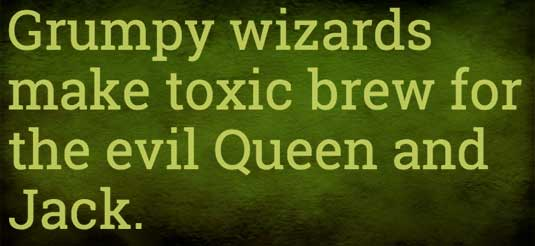
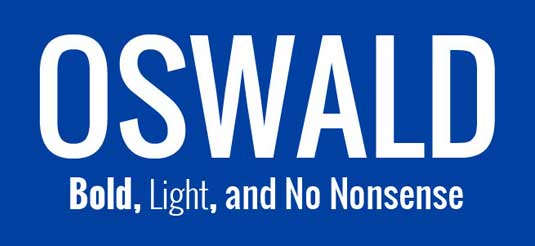
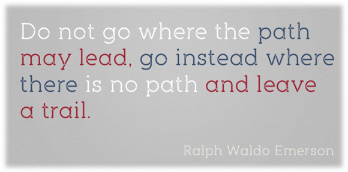
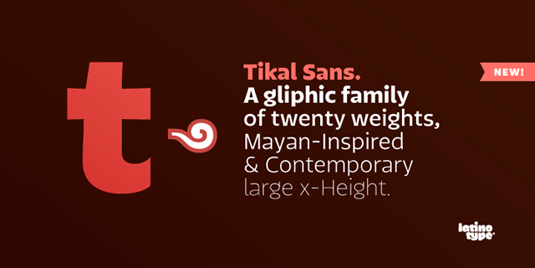
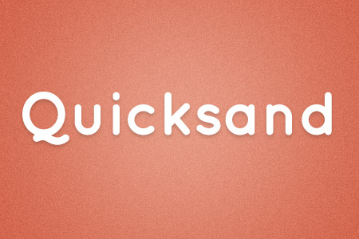
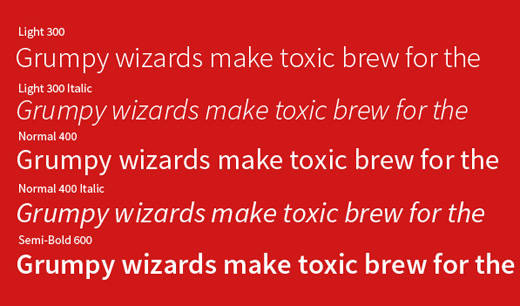

Fonts - Proper Uses
While common typefaces work well in flat ui design, opt for something more unique and attractive. If you do want to make your website stand out, an outstanding typeface will help create an identity for your project. It is very important to have sharp, flair and flat fonts in a manner that it is bold, simple and straight-forward. Here is the list of typefaces that fit with proper design most:
Roboto Slab is one variant in the wider Roboto family designed by Christian Robertson. The slab version particularly catches the eye with its geometric shapes and open curves. It works equally well as a display font or for dense copy: the letterform rhythm feels natural, making for a pleasant reading experience.
One of the first fonts to be featured in Google's Web Fonts library, Oswald has been updated more recently to include multiple weights, extended character sets and better kerning. The font is a reworking of the classic Alternate Gothic sans-serif typeface style, created by designer Vernon Adams, and is a fantastic display font for headlines and captions.


Lato font is a sans serif typeface family. It consists five weights: 100, 300, 400, 700, 900 plus corresponding italics. Lato gives users a felling of warmth as well as stability and firmness.
Taking its name from the Mayans' most prominent city, Tikal Sans' characterful sharp-ended strokes are influenced by glyphs that were used by the South American civilization.


This is a display sans serif. You can have a look at it below:
With Source Sans Pro you get a whooping 12 styles. It comes in 6 different weights: light, book, normal, semi-bold, bold and ultra-bold + they each come in regular and italic.

